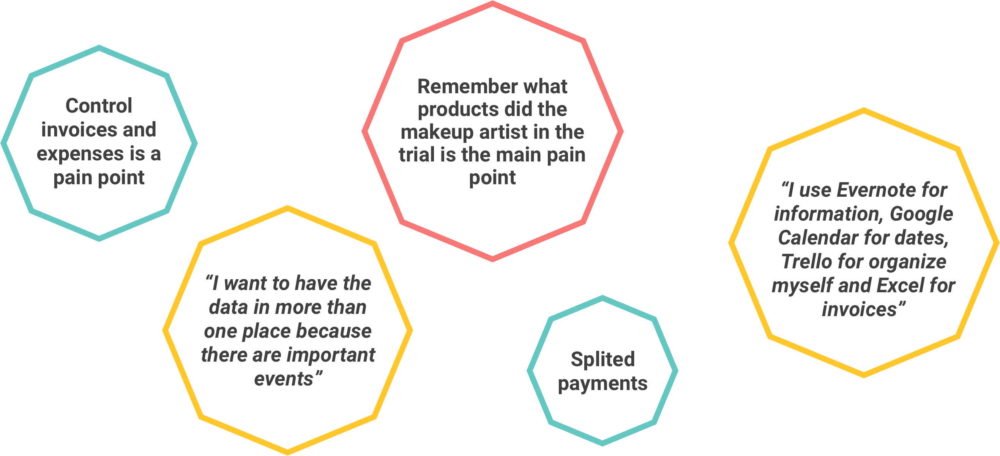

INTRODUCTION
I do not have many opportunities to design an entire platform, so taking advantage of the opportunity, I wanted to do it on a topic that I felt passionate about.
I like makeup since I can remember and I have been lucky enough to work in makeup sales for years and then become a Makeup Artist. During all these years, I have learned that the professional makeup world is hard. As in many other artistic professions, it is very difficult that people value what you do and the dedication that exists behind each job. Therefore, I wanted to do something that would make life easier for Makeup Artists.
USER EXPERIENCE
EARLIER STEPS
Starting the investigation, I wanted to obtain data to know what needs I wanted to cover, that is, the Problem Statement. I did not want to do surveys before I was clear about what I wanted to ask and I wanted to avoid having to reform it because it was a project with a tight deadline of two weeks.
In the interviews I started with an open question, based on the last experience they had, so they could remember the details with ease.
Explain how was your last experience with a client, since he/she first contacted you, going through how you carried out the services till when the contact with the client was over.

The client contacted them through a channel, that could be platforms exclusively dedicated to that, social networks, emails or communication apps such as WhatsApp or Telegram.
A trial make-up was arranged. In the interval of time since the first contact and the day of the trial, most Makeup artists not only like to know what type of makeup the client wants to wear, they also want to create a bond, gain confidence with someone who will be part of that special day. Therefore, they ask questions about the personality, the event, the place, accessories that they will wear, inspirations, skin routines, etc.

All this information is collected as they can. Some of the tools they use to save that information are: Evernote, WhatsApp (keeping the information in the conversations), physical agendas, notes, notebooks, Apple Calendar, Google Calendar, Trello, etc.

In the make-up trial, the Makeup artists look for different combinations of products to find the ideal combination and avoid allergies on the day of the event.

On the day of the event, the Makeup artists look at the client’s information and use the same products.
As for the service payment, the vast majority of makeup artists tends to split it, although they do it in different ways. These are common dates to establish payments: to make a reservation, the day of the trial makeup, the day of the event and days before the event. Normally, the total is divided into two or three of these dates.
FINDINGS
With all this information I was able to specify some questions to do a Survey and obtain a bit of quantitive data. On the responses, these are the main findings I discovered.
USER PERSONA AND USER JOURNEY
I also learned that, for example, calculating makeup time or carrying an inventory of products, which at first I had considered as possible pain points, they really were not.
Neus, my user persona, embodies all the information I obtained in the research and helps me to focus the platform on the users needs.

Also I created a User Journey that could happen based on the testimonies I had heard in the interviews. It starts from the moment that the client contacts with Neus until she does the makeup.
FEATURE PRIORITIZATION
From almost the first moment I was clear that the platform should be an app, since the Makeup artists have to take the information with them everywhere and have easy access, requirements that an app fulfills. However, the other decisions like features or content were not so obvious. So, to process all the information I did an Affinity map.
I did a brainstorming coming up with different features that can solve the pain points I had found in the research. Then, I did a Feature Prioritization, that was quite hard because precisely what I wanted to avoid was that Makeup artists jump from one app to another, so my app had to cover many functionalities. But, two weeks are not enough to develop such a complex app. Using the MoSCoW method, I prioritized what features I wanted to develop and came to the conclusion that it was better to focus on those that were specialized for Makeup Artists, which did not exist before. This way I avoided spending my time in designing chronometers or maps, because there are other existing platforms that perfectly cover the needs and people are used to them, so it would also be kind of annoying to change this habits.
Finally, I made a low fidelity prototype and I tested it with Makeup artists. The results were that part of the prototype, where they had to put the products that they are using in the trial makeup to use the same ones in the event, was a bit confusing. At the beginning they did not know very well what each icon meant. The most confusing were the “others” icon, which I represented with a magic wand. I thought that changing the icon wouldn’t make the category understandable enough for everyone, so I solved it by placing the name of each category under the icons.
With all the changes in mind, I made a mid-fidelity prototype in Sketch. For the icons of the tap bar, I made them directly in high fidelity, for two reasons:
- So I could do real tests to see if the users recognized the icons well and knew what to expect in each tab.
- Because it saved some time not having to look for some provisional icons and then not using them.
I also did usability tests with this fidelity to Makeup artists. This time it was much easier because when I did it on paper, people who are not used to do tests, were confused when they saw low fidelity and did not act in the same way they would in normal use. Thus, in this state I could check the usability of the platform much better and the results were positive. These are some of the mid fidelity screens.
USER INTERFACE
MOODBOARD AND STYLE GUIDE
Then it was time to make a high-fidelity prototype. For this, the first thing I did was to define the brand. I wanted it to be artistic and colorful but not childish, in fact, I wanted it to be the opposite, professional, because after all, it is a work tool. With this I created a moodboard to inspire me.
I decided that I was going to use Montserrat typography because it is professional but at the same time not too serious, and Abril Fatface, which is completely different, to give contrast and originality.
FEATURES
These are some features and thoughts behind them.
-
1. AS REPRESENTATION. The customer file was the first thing I designed. At the top I wanted the essential customer information to be available and easy to access. At first I was going to put a photo of the client, but then I thought about how the Makeup artists was going to get this profile picture. While it is true that most Makeup artists make a photo of the trial makeup, or even others that make facecharts, which could also serve as a profile picture, I knew that the client file was almost always created before making the trial makeup and this means that the file was not going to have any photo until the day of the trial. On the other hand, the possibility of Makeup artists asking for a profile photo to the client to use something before the trial seemed unnecessary and a waste of time. I solved this question by representing the type of event with icons. I also used the same type of icons throughout the app to create consistency.
2. GALLERY. Although for the profile information I put an icon, I knew I had to create a place where the Makeup artists could keep the photos related to a client. Some makeup artists asked for photos of the accessories, others asked for photos of makeup or hairstyles that the clients liked, to have an idea of what they want, etc. I also had to take into account the photos of the trial makeup and the facecharts that some Makeup Artists make. As there were many categories and each Makeup artists did ones but not others, I designed a general gallery section. This way, it prevents that if a Makeup artist, for example, never makes facecharts, it would always have an empty and useless section.
3. THE MAKEUP PRODUCTS. I also designed a section to leave the products that are used in the makeup trial, thus solving the main pain point. The categories are the result of a Card Sorting.
4. SAFE INFORMATION. Other needs of Makeup artists is that they want to have the information in more than one place, since they have information related to important events, such as weddings. It is at this point where many times a physical agenda had failed; there were numerous experiences where they had been forgotten or lost. On the other hand, there was also a fear that the app would stop providing service at some vital moment. There were Makeup artists who did not trust enough to have all the information in one app. To solve this, I designed a button that generates a pdf report, which they can save in the cloud if they want.
5. INTERNAL ACCOUNTABILITY. Another of the pain points was to control and organize the invoices. Therefore, also create a section for it. In the invoice client tab, the Makeup artist can find a section to split the payments into the quantities they want, by simply sliding the line, the app automatically calculates the prices. They can also set a deadline for each payment. This way when there is an overdue the app will give a warning. In the main page, users can see the basic data of each client and a graph with the all the data to have a general view.
Here you can find the complete user flow, where you can create a new customer file and then a new invoice file.
I hope you liked this project and if you have any suggestions or comments, feel totally free to contact me!
janiragilarte@gmail.com